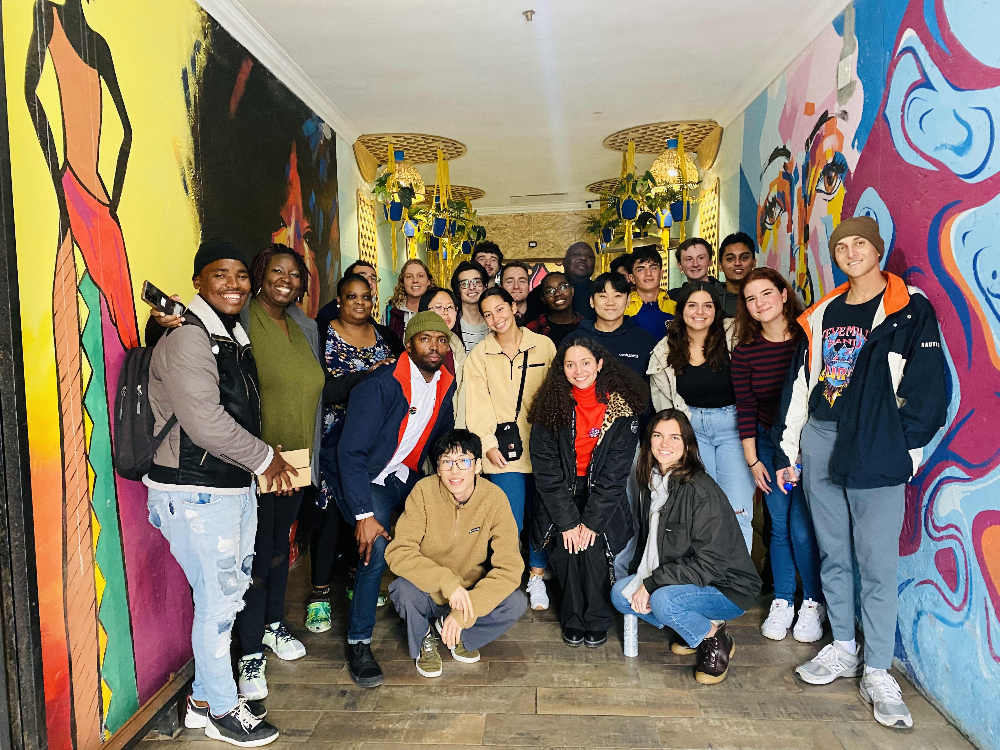
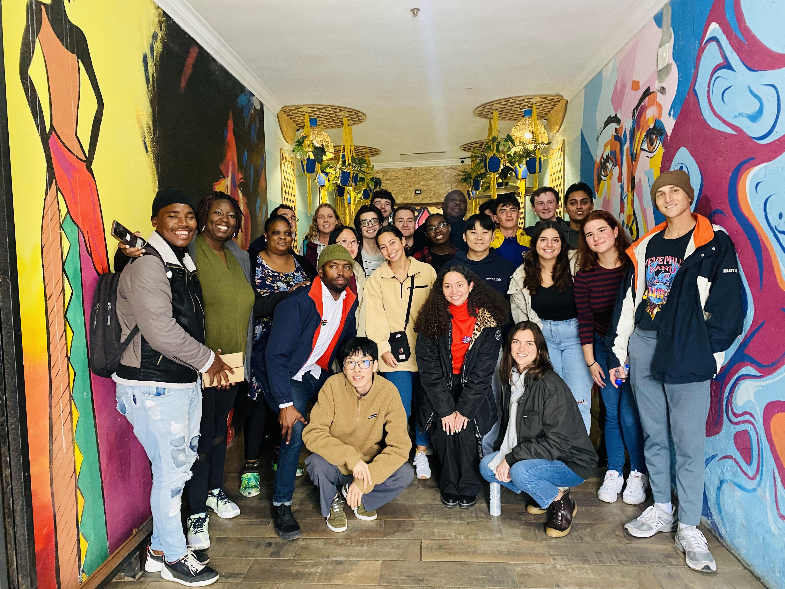

Projects

The project comprised of developing a MERN Stack application that can be used to store information about the stakeholders in YIT's tutoring programs. This included simplfiying tasks such as measuring student attendance, tracking number of hours tutored, recording the work covered during a tutoring session, posting grades achieved by learners in the program as well as termly questionnaires to assess the effectiveness of the program.
We were able to develop an application that could:
● add, remove or archive profiles
● host survey
● track sessions, attributes of those sessions such as students, length, comments and date
● track tutor hours and payroll
● hold multiple admin, student and tutor profiles
 


Role: As the Project Manager for StudyStream, I took on a multifaceted role primarily focused on UX design and front-end development using JavaScript and CSS. Initially tasked with designing wireframes, I transitioned to leading all aspects of UX design and implementation due to evolving project needs and communication challenges between front-end and back-end teams.
Responsibilities: My responsibilities included designing wireframes, implementing the main menu, loading selected flashcard sets, and designing and implementing the summary presentation and set interfaces. I also explored integrating MongoDB for data routing to enhance set and flashcard functionalities, dedicating 15-20 hours to this effort, although achieving partial success.
Contributions: Beyond UX design, I played a pivotal role in front-end development, coding visual elements using JavaScript and CSS. This involved creating interactive features such as hover effects on flashcards and tiles, utilizing CSS hover properties and React-stack-cards to achieve responsive, flip-card functionality. This integration of design and development allowed StudyStream to offer engaging user interactions seamlessly.
Project Scope: StudyStream, developed by Team The Flash, is a groundbreaking study tool aimed at students using Zoom for classes. It extracts crucial information from Zoom lecture transcripts and chat logs, transforming them into interactive flashcards for efficient review and study. This not only supports student learning but also provides educators with valuable insights into student comprehension to tailor future lectures effectively.
The project used Google Maps API and the MERN Stack to calculate ideal living locations based on preferred proximity to specific places, managed with Git for version control.
View more of my projects on GitHub